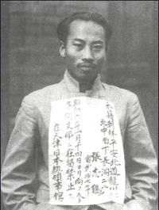

도깨비풀을 헤치며 산비탈을 따라 외진 길을 오르면, 오래된 변소 냄새가 코를 찌른다. 문도, 지붕도 없이 바닥에 구멍만 뻥 뚫린 간이 화장실 탓이다. 헛디딜까봐 조심스럽게 발을 내딛으며 숨을 헉헉 몰아쉬는 길목에 뜬금없이 나타난 화장실. 도교 사원 '천녕사'를 오가는 현지 주민들이 급하게 일을 보느라 만든 것으로 보였다.
난징 시내에서 40분 남짓을 달려 황룡산에 도착했다. 산 중턱에 위치한 천녕사는 말이 좋아 '사찰'이지 폐허에 가까웠다. 오랫동안 아무도 관리하지 않아 작은 우물에는 낙엽이 수북하고, ㄷ자로 배열된 작은 3개 동 건물에는 지붕조차 없었다. 유리도 끼워지지 않은 좁은 창문으로 들여다 본 어두운 방 안엔 도교 의식을 위한 장식과 그림들이 어지럽게 널려있어 을씨년스러운 분위기를 자아냈다. 동행한 현지 가이드는 "저번에 왔을 때는 지붕이 있었는데, 강풍에 날아갔나..."라며 말끝을 흐렸다. 한때 이곳이 무장항일투쟁을 벌일 교육생을 기르던 학교였다는 흔적은 전혀 찾을 수 없었다.
세월의 폭격을 맞은 건물 옆 공터는 더욱 참담했다. 우거진 잡초와 쓰러진 나무기둥이 즐비해 걷는 것조차 힘든 그곳은 ‘야외훈련장’이라 했다. 오직 잡초 속에 파묻힌 주춧돌만이 이곳에 어떤 구조물들이 있었다는 걸 추측케 한다. “자 여기서 교육생들은 무얼 했을까요?” 어느새 저만치 앞에 서서 취재팀을 돌아보고 있는 현지 가이드가 말했다. 여기선 아무 것도 할 수 없어보였다. “이곳에선 유격훈련이나 폭탄 던지기, 사격훈련 등을 했을 걸로 추정됩니다. 아마 공터 뒤쪽 야산까지 훈련장이었을 거에요.” 순간 밀려오는 묵직한 비장함에 가슴이 저릿하다. “자, 그분들을 위해 묵념합시다.” 더욱 저려오는 가슴, 느껴지는 것은 ‘망국의 한’인가?
2018년 11월 14일, 대한민국임시정부 수립 100주년을 앞두고 항일독립운동의 뿌리, 임시정부의 흔적들을 찾아나선 길. 우리 정부의 노력과 중국 정부의 협조로 비교적 잘 보존된 곳도 있었지만, 차마 눈뜨고 보기 힘들 정도로 황폐하게 터만 남아있거나 이미 그 흔적조차 찾아볼 수 없는 곳도 있었다. '조선혁명군사정치간부학교'(이하, 간부학교)는 후자였다. 누구 하나 돌보는 이 없이, 그 흔한 안내 표지조차 서 있지 않은 곳에 쓸쓸히 선 건물들은 아무 말이 없었다.
궁금증: 김원봉의 유적지라서?
김원봉
천녕사는 약산(若山) 김원봉(1898~1958)이 설립한 간부학교 터 중 유일하게 아직까지도 그 흔적이 있는 곳이다. 간부학교는 1930년대 의열 투쟁의 한계를 인식한 김원봉이 중국 국민당의 지원을 받아 한인 군관을 양성하기 위해 설립한 군사 교육 기관이었다. 일제의 밀정 때문에 장소를 옮겨 다니는 고초 속에서도, 1932년부터 1935년까지 3년간 125명 이상의 졸업생을 배출했다. 졸업생들은 목숨을 걸고 만주, 국내 등지로 잠입해 공작활동을 하거나 후일에 생길 한인군사조직을 이끄는 첨병이 되었다고 한다.
이토록 중요한 의미를 띄고 있는 장소임에도 불구하고, 이곳을 기억하고 보존하기 위한 노력은 거의 없었다. 대한민국임시정부기념관건립위원회 홍소연 자문위원은 "몇 년 전부터 비로소 관심을 받기 시작했다"면서도 "소규모 연구팀의 답사 정도에 그친다"고 말했다. 왜 이렇게 관리되고 있을까? 천녕사 방문에 앞서 다녀왔던 상하이(上海), 자싱(嘉興), 항저우(杭州)에선 임시정부청사뿐만 아니라 김구 선생의 피난처까지 문화재로 잘 관리되고 있었다. 김구 선생의 ‘전시관’이라 해도 좋았다.
취재팀은 의문을 쉬이 떨칠 수 없었다. 그만큼 천녕사는 처참했다. 하지만 취재팀이 처음부터 간부학교나 김원봉을 취재대상으로 다루려고 했던 것은 아니었다. 그의 삶의 내막을 살펴보기 전까지, 그가 오늘날 어떤 대접을 받고 있는지 알기 전까진 말이다. 강렬했던 천녕사의 기억, 취재팀은 그렇게 홀린 듯 김원봉을 찾으러 나섰다.
국내에 돌아온 취재팀은 김원봉이라는 인물에 대해 조사해보기로 했다. 우선 취재팀 회의를 해보았다. 김원봉? 최근 김원봉이 등장한 영화 <암살>이나 <밀정>이 개봉하기 전까지, 김원봉이란 이름은 중고등학교 시절 교과서에서 몇 번 본 게 전부였다. 그에 대해 생각나는 것은 의열투쟁단체인 의열단(義烈團)의 단장이라는 것 정도? 의열단원이었던 김익상의 종로경찰서 테러사건, 나석주의 동양척식주식회사 의거사건 등은 본 기억이 있지만, 정작 의열단의 단장인 김원봉에 대해선 자세히 기억나지 않았다.
조사 결과, 김원봉은 생각보다 훨씬 더 중요한 사람이었다. 어쩌면 김구 선생보다도 더. 그렇다면 그의 삶은 어떠했을까? 어떤 업적을 남겼을까? 어떤 최후를 맞이했을까? 이제부터 그의 삶의 행적들을 간략히 다뤄보고자 한다.
취재팀은 김원봉의 삶을 4가지 단계로 나누어 보았다. 1)청년기의 의열단 활동, 2)그 후 정당창당을 통한 정치적 활동, 3)충칭(重慶)임시정부에의 참여, 4)해방 이후의 고통과 월북이다. 이제 그의 파란만장했던 삶 속으로 들어가보자.
청년기의 의열단 활동
20대의 김원봉, 의열단 만들다
약산 김원봉은 1898년 음력 8월 13일 경남 밀양에서 태어났다. 1919년, 23세의 김원봉은 만주 지린(吉林)성에서 의열투쟁에 뜻을 함께했던 12명의 동지들과 ‘의로운 일을 열렬히 행한다는’ 의열단을 조직했다. 이후 김원봉은 의열단장으로서 의열단원들의 국내 경찰서 폭파와 요인 암살 등을 지휘했다.
동아일보 의열단 경고문
'조선총독부 소속 각 관공리에게'(1923)
의열단의 대표적인 활동은 다음과 같다. 박재혁의 부산 경찰서 폭탄투척 사건(1920), 최수봉의 밀양 경찰서 폭탄투척 사건(1920), 김익상의 종로경찰서 폭탄투척 사건(1921), 이종암 외 2인이 상하이 황포탄(上海 黃浦灘)에서 벌인 다나카 일본육군대장 저격 미수사건(1923), 나석주의 동양척식주식회사 및 조선식산은행 테러기도 사건(1926) 등. 특히 김익상 의사는 의거 직후 유유히 일제의 포위망을 뚫고 의열단 본부였던 베이징(北京)으로 돌아왔다. 한 마디로, 의열단은 일제에게 악몽과도 같은 존재였다.
약관을 갓 넘긴 김원봉이 의열단을 조직한 이유는 무엇이었을까? 김상웅의 <약산 김원봉 평전>에는 젊은 김원봉이 의열투쟁에 대한 자신의 신념을 설파하는 대목이 나온다. “자유는 우리의 힘과 피로 얻어지는 것이지, 결코 남의 힘으로 얻어지는 것이 아니다. 조선민중은 능히 적과 싸워 이길 힘이 있다. 그러므로 우리가 선구자가 되어 민중을 각성시켜야 한다.”
김원봉은 조선의 독립이 오직 조선인의 손에 달려있음을 강조하고 있다. 그런데 그에게 조선의 독립은 ‘우리의 힘과 피’를 통한 방법 즉, 무력투쟁을 통해 가능할 뿐이었다. 하지만 더 중요한 것은 그 다음이다. 김원봉은 의열단이 조선민중에게 무기를 들고 일어날 용기와 희망을 주어야 한다고 말했다. 즉, 의열단은 민중을 독립투쟁으로 이끄는 ‘선구자’다. 의열 활동은 단순한 테러활동에 그치는 것이 아니라 독립을 향한 민중들의 열망을 폭발시키는 기폭제가 되는 것이다.
하지만 1920년대 중반 이후 김원봉과 의열단은 점차 의열 투쟁의 한계를 절감하게 된다. 의열단의 명성이 높아질수록 일제의 첩보망도 촘촘해졌다. 의열단의 의거 시도가 대부분 사전에 차단되었고, 자금난에도 시달리게 되었다. 더욱이 기대했던 만큼 조선의 민중들은 움직여주지 않았다. 그러나 김원봉은 의열단의 궁극적인 사명 즉, 전(全)민족적 차원의 무력투쟁이란 노선은 이어나갔다. 그는 이런 생각에서 항일무장단체를 양성하고 흩어져있던 독립운동가들을 규합하고자 했다.
그러나 1920년대 중반 이후 김원봉은 점차 의열 투쟁의 한계를 느끼게 된다. 일제의 첩보망이 촘촘해짐에 따라 의열단의 의거 시도가 대부분 사전에 차단되었고, 의열단 역시 자금난에 시달렸기 때문이다. 그러나 김원봉은 의열단의 궁극적인 목적 즉, 전민족적 차원의 무력투쟁이란 독립운동노선은 수정하지 않았다. 다만 이제부턴 보다 체계적인 무장세력 양성과 독립운동 단체의 조직화라는 방법으로 나아갔다.
정당 창당을 통한 정치적 활동과 충칭(重慶)임시정부에의 참여
마침내 이뤄낸 꿈, 그러나 시련
1926년, 김원봉은 의열단 동지들과 함께 중국 광저우(廣州)의 황포군관학교에 입소해 정식으로 군사교육을 받는다. 여기서 그는 후에 중국 국민당의 고위간부들이 될 많은 사람들과 교분을 쌓게 된다. 김원봉이 이 때 얻은 ‘인맥’은 중국 국민당이 김원봉의 후원자 역할을 하는 데에 결정적으로 기여한다. 뿐만 아니라 김원봉과 동지들은 이 학교에서 새로운 사상을 습득하게 되는데, 그것은 당대를 휩쓸었던 사회주의였다.
이후로 그는 점차 사회주의 사상에 빠져들게 된다. 1929년 공산주의자 안광천과의 만남을 계기로 그는 조선공산당재건동맹에 참여하고, 베이징(北京)에 레닌주의정치학교를 개설하여(1930) 사회주의 사상으로 무장한 독립투사들을 키워내는 데 전념했다. 하지만 이러한 행적 때문에 김원봉은 당대 임시정부를 이끌던 우파 민족주의 세력 등으로부터 ‘공산주의자’라고 비난당하게 된다. 이러한 꼬리표는 이후로 그림자처럼 그를 따라다녔다.
1932년 김원봉은 중국 국민당의 지원을 받아 난징에서 조선혁명간부학교를 설립해 교장을 역임했다. 이곳에서는 1기부터 3기까지 총 125명의 졸업생이 배출되었다. 취재팀이 가보았던 천녕사는 3기 교육생들의 교육장소였다고 한다.
1931년 만주를 점령한 일제가 중국 내륙으로의 침략을 노리는 가운데, 곧 중일전쟁이 발발할 것이라는 분위기가 커지고 있었다. 닥쳐올 전쟁을 예견하며 많은 독립운동가들은 그 동안 정치적 세력 다툼과 이념상의 차이 등을 이유로 사분오열되어 있었던 독립운동단체들의 통합과 단결을 절실히 느꼈다. 이러한 시대적 상황을 계기로 1935년 7월, 우파 독립운동단체였던 신한독립당, 한국독립당, 대한독립당, 조선혁명당과 좌파성향이 강했던 의열단 등이 규합하여 한국민족혁명당(2년 후 조선민족혁명당으로 개칭, 이하 민족혁명당)을 조직하였다. 중국 내 독립운동세력이 이룬 최초의 좌우합작 정당이었다.
민족혁명당 당기
민족혁명당은 창당 당시 중국에서 가장 큰 독립운동단체였다. <약산 김원봉 평전>에 따르면, 무려 2200여 명의 독립운동가들이 창당에 참여했다. 흥미로운 사실은 임시정부에 몸담았던 상당수 독립운동가들도 민족혁명당에 가담했다는 것이다. 하지만 김구 등 소수의 임정 요인들은 여전히 통합운동에 참여하지 않았다. 좌익계열인 의열단 세력이 민족혁명당을 주도했고, 민족혁명당의 일부 당원들이 임시정부의 해체를 요구했다는 이유에서였다.
김원봉은 민족혁명당의 총서기로 선출되었다. 그는 창당대회에서 ‘한국혁명의 완성은 민족운동을 기본으로 해야 하며 해외보다 국내운동에 주력하지 않으면 안 된다’는 요지의 연설을 했다. 그의 연설은 의열단의 신념을 계승한 것이다. 즉, 독립운동은 민족 전체의 무장투쟁이어야 한다는 것, 따라서 국내의 민중들을 기반으로 거시적인 항일무장투쟁을 통해 독립을 완수해야 한다는 것이다.
이렇듯 민족혁명당은 민중의 항일무력투쟁을 이끌어갈 선도적 집단이 되고자 했다. 의열단원 출신으로, 민족혁명당의 조직론을 당원들에게 교육했던 이영준은 ‘민족혁명당의 실천적 의의’에 대한 5가지 테제를 제시했다. 다음은 민족혁명당의 무장투쟁노선을 잘 보여주는 3가지 테제들이다.
첫째, [민족]혁명당은 ‘민중의 전위’로서의 의의를 갖는다. 당은 직접 민중의 선두에 서서 그들을 지도하고 훈련함으로써만 임무를 다할 수 있으며 활발한 운동을 전개할 수 있다.(이하 생략)
둘째, 혁명당은 ‘민족부대’로서의 의의를 갖는다. 당은 민족을 떠나서는 존재할 수 없고, 민족을 기초로 민족에 의해 조직되어야만 하며, 민족 최선의 분자로 구성되는 것이다. (이하 생략)
셋째, 혁명당은 ‘민족부대 최고형태’로서의 의의를 갖는다. 당은 민족을 조직하는 부대이며, 민족을 지도하고 훈련시키는 사령부임과 동시에 민중의 학교이다.(이하 생략)
위의 테제들은 민족혁명당이 의열단의 정신을 계승해 무장투쟁노선을 더욱 조직화하고 민족의 전위부대, 선도기구 역할을 해야 함을 강조하고 있다.
그러나 민족혁명당은 창당되자마자 곧바로 분란에 빠진다. 의열단 계열의 좌익 성향 독립운동가들이 당권을 쥐자 한국독립당(임시정부 계열), 신한독립당 등 우파 세력 일부가 당을 이탈했다.(1935) 설상가상 의열단 계열 다음으로 세력이 컸던 이청천 계열 세력도 당에서 이탈해버렸다.(1937) 민족혁명당에는 순전히 의열단 계열 및 좌파성향 단체들만 남게 되었다.
한편, 1937년 중국 베이징(北京)에서 벌어진 ‘노구교 사건’을 계기로 마침내 중일전쟁이 발발한다. 이때만을 기다려온 김원봉은 중국국민당을 설득해 1938년 중국 우한(武漢)에서 조선의용대를 창설한다. 중국정부의 공인을 받은 중국 관내 최초의 한인무장단체였다. 김원봉은 이 조선의용대의 대장으로 취임한다. 비록 병력 수는 적었으나 조선의용대는 첩보활동, 선전활동, 포로 심문작전 등에서 뛰어난 활약을 하게 된다.
하지만 또 다시 김원봉에게 시련이 찾아왔다. 1941년, 그가 이끌던 조선의용대의 주력이 중국공산당의 근거지였던 중국 허베이(華北) 지방(지금의 베이징, 허베이성, 텐진, 네이멍구 자치구에 걸친 지방)으로 이동해버린 것이다. 물론 김원봉으로서는 어쩔 수 없는 선택이었다.
중국국민당의 후원을 받고 있던 조선의용대였다. 하지만 국민당은 일본과의 항쟁보다 중국 내부의 불순분자 곧, 공산당 세력을 먼저 척결해야 한다는 입장이었다. 반면 조선의용대 내 좌익적 성향, 특히 공산주의에 경도되어 있던 일부 대원들은 일본과의 싸움에 소극적인 국민당 대신 허베이 지방에서 일본군과 치열하게 전투하고 있던 공산당에 가담하고 싶어 했다. 더욱이 반공(反共)주의를 표방하던 국민당과의 불편한 관계도 좌익 성향의 조선의용대 대원들의 허베이 행에 일조했다.
임정 합류와 불편한 동거
조선의용대 주력이 허베이에 있던 공산당에 합류하게 되자 김원봉과 그와 함께 했던 좌파 단체들은 1941년 충칭임시정부에 합류한다. 그를 따르던 조선의용대원들은 한국광복군에 편입된다. 이후 그는 광복군 부사령 및 제1지대 대장에 취임하고, 1944년에는 임정 군무부장에 선임된다. 임시의정원 의원으로도 활동하였다. 이로써 한국독립당 일당 체제로 운영돼온 임정은 다당 체제로 바뀌게 된다.
하지만 임정 합류는 김원봉이 진심으로 원하는 바는 아니었던 것으로 보인다. 김원봉은 오랜 세월 우파 독립운동 세력과는 각을 세우고 있었다. 임정 측에서도 김원봉과 그의 추종자들을 공산주의자들이라 간주하여 경계하고 배척해왔다.
김원봉이 임정 합류를 선택한 데에는 김원봉 자신의 정치세력 약화뿐만 아니라 중국국민당의 지속적인 합당 요구도 크게 작용했다. 중국국민당은 한인독립운동세력을 일원화하여 자신들의 통제 하에 두고 싶었다. 그들은 임시정부에도 좌파 단체들과의 협력을 강력하게 요구했다. 심지어 임시정부가 동조하지 않을 경우 일체의 지원을 끊겠다고 선언하기도 했다.
물론 김원봉 일파의 임정 합류는 그동안 대립해오던 좌우 세력 간 합작이라는 점에서 긍정적으로 평가받는다. 김원봉 등 좌파 세력의 임정 합류에는 임정 내 최고 지도자였던 백범 김구의 포용력이 크게 작용했다. 하지만 김원봉과 좌파 세력에 대한 우파 진영의 반감과 경계심은 김원봉의 임정 합류에도 지속되었다. 김구 선생의 백범 일기에는 당시 우파 진영에서 얼마나 김원봉을 경계했는지 잘 나와 있다.
내[김구]가 모든 단체를 통일하여 민족주의의 단일정당을 만들 것을 [민족혁명당 요인들에게] 제의했더니, 그 자리에 있던 이는 일치하여 찬성하였다. 한 걸음 더 나아가 미국과 하와이에 있는 여러 단체에도 참가를 권유하기로 결의했다.
미국과 하와이에서는 곧 화답이 왔다. 통일에는 찬성이나 김약산[김원봉]은 공산주의자인즉, 만일 내가 그와 같은 일을 같이 한다면 그들은 나와의 관계까지도 끊어버린다는 것이었다.(김구, 백범일지)
여러 우여곡절 끝에 임정에 합류한 이후에도 김원봉과 민족혁명당 세력은 임정의 여당 격인 한국독립당 세력과 지속적으로 반목해왔다. 다음은 김원봉의 황포군관학교 동기로서, 김원봉을 위해 많은 지원을 해줬던 중국국민당 고위간부 등걸(滕傑)의 증언이다.
김원봉은 임시정부를 유명무실한 조직으로 인식하고 있었으며, 그 책임자들은 공연히 허위(虛位)에 안자 있고 실제 활동이 없음으로 이끌어 갈 수 없다고 보는 반면, 임시정부측 인사들은 김원봉 등을 너무 나이가 젊고 충동적이며 환상에 차 있고 또 언행도 너무 편격하다고 보아 그들을 중요시하지 않았던 것입니다. <삼민주의역행사의 한국독립운동에 대한 원조, 한국독립운동사자료집: 중국 인사증언>
하지만 이러한 지속적인 내부다툼에도 불구하고 김원봉과 민족혁명당은 자신들이 참여하고 있는 임정의 통일전선정부 수립 노력을 전적으로 지지한다는 입장이었다. 그들은 임정의 국제적 승인과 연합국과의 대일합동군사작전을 위해 분투했다. 김원봉과 민족혁명당 세력은 임시정부의 제1야당으로서 여당인 한국독립당과 지속적인 협치 속에서 자신들의 입지를 강화하고자 했던 것이다.
해방 이후의 고통과 월북
해방 이후의 불행한 삶과 월북
임시정부 요인으로서 1945년 12월 환국한 김원봉은 곧 임시정부를 탈퇴하게 된다. 해방정국의 복잡하고 치열했던 정치 싸움을 전부 다룰 수는 없다. 중요한 것은 김원봉에게 붙었던 좌파, 좌익, 공산주의자라는 꼬리표가 남한에서 그의 정치적 활동을 매우 제약했다는 사실이다.
당시 국내외 독립운동단체들은 새로 세워질 나라의 정권을 잡기 위한 정치적 분란에 휩싸였다. 이러한 와중에 정치적 이해관계, 이념상의 차이 등을 이유로 정적(政敵)들을 무차별적으로 탄압하고 테러하는 상황들이 속출했다. 김원봉도 예외는 아니었다.
더욱이 그는 미군정과 남한 단독정부를 주장하는 극우파들과는 거리를 두면서 좌우합작과 통일정부를 강조했던 좌파노선에 참여했다. 여운형 등과 함께 남한 최대의 좌파연합단체인 ‘민주주의민족전선’의 의장으로 취임한 것이다. 이 무렵부터 김원봉은 우파단체들의 테러 기도에 끝없이 시달렸다고 한다.
악덕친일경찰 노덕술에게 당한 굴욕적인 체포과정과 취조 때문에 3일간 꼬박 울었다는 이야기도 이 무렵 때의 얘기다. 김원봉은 “내가 조국 해방을 위해 중국에서도 일본놈과 싸울 때도 이런 수모를 당하지 않았는데 해방된 조국에서 악질 친일파 경찰 손에 수갑을 차다니, 이럴 수가 있소”라며 분노했다고 한다.
해방정국 시기, 많은 독립운동가들이 좌파냐 우파냐라는 선택을 강요받았다. 이러한 강요 속에서 좌우합작과 통일정부를 주장하는 ‘어중간한’ 사람들은 하나둘씩 암살되었다. 대표적으로 몽양 여운형(1946.7)과 우파의 거두였던 백범 김구(1949.6) 등이 그렇게 쓰러졌다.
(좌) 몽양 여운형 장례식 (우) 백범 김구 시신
극우파 세력의 지속적인 테러위협을 받던 김원봉은 여운형마저 암살당하자 1948년 4월 9일 월북을 택했다. 충칭임시정부 시절 김원봉의 비서였던 중국인 사마로에 따르면, “북한으로 가지 마라”고 보낸 자신의 편지에 김원봉이 “북한은 그리 가고 싶지 않은 곳이지만 남한의 정세가 매우 나쁘고 심지어 나를 위협하여 살 수가 없어 시골로 거처를 옮겼다”고 답했다 한다.
그는 북한에서 여러 고위직을 맡았다. 그는 북한 초대 내각의 국가검열상, 1952년에는 노동상, 1957년에는 최고인민회의 상임위원회 부위원장에 오른다. 남침을 계획하던 김일성에겐 전쟁 반대를 주장했다고 한다. 전쟁이 발발하면, 대한민국을 도와 미국이 참전할 것이고, 오랜 전쟁으로 많은 희생자들이 발생하기 때문이라는 것이다. 한편, 경향신문 1954년 1월 26일자에는 김원봉이 남파간첩단을 직접 지휘했다는 기록도 남아있다.
그의 최후에 대해선 확실히 알려진 바가 없다. 김일성이 김원봉에게 중국 국민당 장제스의 사주를 받은 국제 간첩이라는 죄목을 씌웠고, 분을 못이긴 김원봉이 정치범수용소 안에서 청산가리를 먹고 자결했다는 설이 유력하지만 어디까지나 설에 불과하다.
김원봉은 왜 제대로 기억되지 않고 있을까?
취재팀이 살펴본 김원봉은 중국 관내 독립운동세력 중 김구만큼 혹은 그 이상으로 영향력이 컸던 인물이었다. 또한 의열단 조직부터 조선의용대 창설까지, 김원봉은 누구보다도 민족적 차원의 무력투쟁의 중요성과 의의를 강조했다. 또 한편으로, 그는 소위 ‘우파 민족주의자’는 아니었다. 심지어 그를 공산주의자라고 배척하는 독립운동가들도 있었다. 어쨌든 김원봉이 대단히 문제적인 인물임에는 틀림없었다.
왜 이렇게 영향력 있던 인물이 사적지에서나, 독립운동역사에서나 제대로 기억되지 못하고 있는 것일까? 혹시 천녕사만 여러 사정 때문에 관리되지 못하고 있는 것 아닐까? 취재팀은 김원봉과 관련된 또 다른 사적지들은 어떻게 관리되고 있는지 살펴보았다. 결과는 참담했다.
국외 독립운동 사적지 비교
단체/인물명
국외 사적지 수
임시정부
22
한국광복군
21
민족혁명당
1
조선의용대
23
의열단
3
김구
7
김원봉
11
독립기념관 사이트에서 제공하는 <국외 독립운동 사적지>에 등록된 바에 따르면, 김원봉과 직간접적으로 연관이 있는 사적지는 20여곳에 이른다. 김원봉이라는 인명으로 직접 검색된 유적지도 11곳이다. 하지만 의열단 창립지, 조선혁명간부학교 터, 조선의용대 창설지 등 김원봉의 흔적이 깊게 배인 사적지들 중 현재 관리되고 있는 곳은 단 한 곳도 없다.
임시정부 국외 독립운동 사적지
이와 대조적으로 현재 보존, 관리되고 있는 임시정부 관련 유적지는 꽤 있다. 임정 관련 사적지들은 상하이(上海), 유저우(柳州), 자싱(嘉興), 항저우(杭州), 하이옌(海鹽), 충칭(重慶) 등 중국 내 곳곳에서 문화재로 지정되어 관리 중이다. 여기에 현재 중국정부와 협의해 복원을 추진 중인 창사(長沙)임시정부청사 터 등을 합치면 모두 8~9곳의 사적지들이 복원 및 관리 중에 있다. 심지어 임시정부 요인들의 피난처까지 문화재로 복원되어 한국 관광객들의 발길을 끄는 경우도 있다.
취재팀은 김원봉이 이렇게 홀대받는 이유가 그가 공산주의자로 낙인찍혀있기 때문이라고 추측했다. 임시정부에 참여하던 시절에조차 김원봉은 좌파 또는 사회주의자로 받아들여졌다. 이러한 인식은 6.25 전쟁 이후 대한민국의 반공주의가 강해지면서 더욱 굳어졌을 것이다.
이러한 의문을 해결하기 위해 취재팀은 두 가지 루트로 취재를 이어나갔다. 독립기념관 연구위원으로 활동했던 원광대학교 김주용 교수를 만나 김원봉의 정체를 물었고, 독립기념관 측에 김원봉 관련 사적지 관리 실태의 원인에 대해 문의했다. 먼저 김 교수와 만나보았다.
김원봉은 사회주의자이기 때문이다?
취재팀은 단도직입으로 질문했다. 김원봉은 사회주의자인가? 취재팀의 질문에 김 교수는 일말의 망설임도 없었다. 그는 “김원봉은 철저한 민족주의자였고 그렇게 삶을 살았다”고 못을 박았다. 이어 그는 취재팀에게 김원봉이 공산주의자가 아니었다는 몇 가지 근거들을 제시했다.
김주용 원광대 동북아시아인문사회연구소 교수
첫 번째로, 그는 김원봉의 최대 후원자가 다름 아닌 중국국민당이었다는 점을 지적했다. 당시 국민당 지도자였던 장제스는 항일투쟁보다 중국공산당 축출에 골머리를 앓고 있었다. 그런 상황에서도 조선의용대는 1938년 다름 아닌 국민당 청사가 있었던 중국 무한에서 창설되었다. 만약 김원봉이 ‘새빨간 공산주의자’였더라면, 조선의용대가 언제 중국공산당으로 넘어갈지 모르는 상황에서, 장제스가 조선의용대 창설에 동의할 리 만무하다는 게 김 교수의 주장이다.
물론 조선의용대 대원들 중 일부는 공산주의적 성향을 보이고 있었던 것은 사실이다. 하지만 대장 김원봉도 그러한 색깔을 크게 갖고 있었다고 보긴 힘들다. 이는 후에 조선의용대 내 극좌계열이 김원봉을 떠나 중국공산당과 합류했다는 사실에서도 확인 할 수 있다. 당시 조선의용대의 화북행을 이끌었던 의용대원은 해방 후에 북한에서 활동하게 될 최창익이란 인물이다.
김 교수에 따르면, 최창익은 김원봉에게 ‘당신이 임시정부 따위와 ’협잡‘하는 것을 두고 볼 수 없다. 우리는 북쪽으로 떠나 공산당과 함께 싸우겠다’고 했다. 이에 김원봉이 최창익 일파를 감시하기 위해 함께 보낸 인물이 김원봉의 최측근이자 고향친구인 석정 윤세주라고 한다. 윤세주는 그 이후 중국공산당과 함께 태항산에서 일본군과 맞서 싸우다 전사했다.
두 번째로, 김 교수는 임시정부 등에서 김원봉을 공산주의자라고 매도한 것은 이념상의 차이보다 독립운동단체들 간 정치적 주도권 싸움의 탓이 더 크다고 지적했다. 자신들의 헤게모니 확장을 위해선 반대파를 특정 프레임으로 규정하는 것은 불가피한 일이었다는 것이다.
세 번째로, 김 교수는 노쇠한 임시정부 요인들보다 김원봉처럼 상대적으로 젊은 세대가 사회주의 사상을 이해하는데 더 빨랐다고 말했다. 김원봉은 당대의 새로운 사상 조류인 사회주의를 자신만의 독립운동노선 수립에 이용할 줄 알았다는 것이다. 앞서도 살펴봤듯, 김원봉은 조선의 전(全)민족적 무장투쟁을 강조했다. 민족과 투쟁. 김원봉의 독립운동을 요약하는 두 가지 키워드다.
김원봉에겐 사회주의가 말하는 프롤레타리아 혁명과 핍박받는 조선민중의 투쟁과 독립이 비슷해보였을 것이다. 앞서 본 것처럼, 그렇다고 김원봉이 민족투쟁 대신 계급투쟁을 우선시하거나, 민족을 부정했다고 보는 것은 무리다. 김 교수는 김원봉을 사회주의자가 아닌 ‘민족주의를 토대로 사회주의적 사상을 받아들인 민족주의 좌파’로 봐야 한다고 말했다. 반면 김구 등 독립운동 원로들에겐 공산주의가 다만 민족보다 계급을 우선시하는 반민족적인 사상으로만 보였다는 것이다.
그래도 김원봉을 사회주의자라고 볼 수 있는 측면도 있지 않냐고 집요하게 물었다. 이에 김 교수는 “어떻게 사람의 마음을 계량화할 수 있나”라고 반문했다. 김원봉이 ‘민족주의자’냐 ‘사회주의자’냐 구별 짓는 게 과연 가능하냐는 것이다. 그는 김원봉이 “빨간 것(사회주의자)은 아닌데 빨간 것이 조금 들어있다고 해서 민족주의자가 아니라고 볼 수는 없다”고 했다. 더욱이 김 교수는 ‘반드시 순수한 민족주의자만이 진정한 독립운동가라고 볼 수는 없다’고 강조했다. 애초부터 다양한 개성과 생각을 지닌 독립운동가들을 어떤 개념 하나로 완전히 규정할 수는 없다는 것이다.
독립운동단체들 간 좌우 이념 대립(클릭)
<약산 김원봉 평전>에는 우파 민족주의 세력이 김원봉과 좌파 세력을 어떻게 간주하고 있었는지 잘 보여주는 대목이 나온다. 시간적 배경은 1930년대 말, 우파 독립운동세력과 좌파 독립운동세력 간의 통합 움직임이 활발했던 무렵이다. 평전에 따르면, ‘임시정부 내의 우파 세력이 여전히 김원봉과 민족혁명당 계열을 공산주의 신봉자로 인식하면서 이들과의 통합을 반대’해왔다. 그러면서 “김원봉이 공산주의 사상을 신봉하지 않는다는 선언을 하면, 통합문제를 다시 협상할 용의가 있다”는 말까지 나왔다. 이에 김원봉은 “민족혁명당은 지금까지 좌경사상이 없었으므로, 특별히 공산주의를 신봉하지 않는다는 성명을 발표하기란 곤란하다”고 맞대응했다.
이렇듯, 김원봉=공산주의자라는 등식은 독립운동 시기에도 민족주의 우파 진영에서 곧잘 통용되던 공식이었다. 우파들에게 사회주의나 공산주의는 모두 비슷한 의미로 통용되었다. 그렇다면, 김원봉을 공산주의자나 사회주의자로 비판했던 민족주의 우파 진영의 입장은 무엇이고, 김원봉을 위시한 민족주의 좌파 세력의 입장은 무엇이었는지 간략히 살펴보자.
좌익 세력에 대한 민족주의 우파 세력의 비판은 크게 2가지로 요약된다. 첫째는 소련 또는 중국 공산당과의 국제적 연대를 추구하며 이들의 명령에 복종하려는 일부 좌익 세력(조선공산당 등)의 행태, 이른바 ‘좌익 국제주의’ 노선이다. 이는 특히 1920년대 후반 중국 관내 한국 독립운동세력들 간 통합운동 즉, ‘유일당촉성운동’에서 적나라하게 드러난다.
당시 중국 관내 최대 공산주의계열 단체였던 유호한인동맹에선 1929년 중국국민당의 반소반공정책으로 인해 발생했던 소련과의 무력분쟁을 비판한 입장문을 발표했다. 그런데 이 입장문에는 ‘제군(전조선 피압박 민중)의 조국 쏘비에트 러시아는 제국주의 강도군의 무력적 포위에 직면하여···’라는 대목이 나온다.<이영범, 한국 근대민족운동과 의열단> 쏘비에트 러시아를 자신들의 ‘조국’이라 부르는 일부 좌익 공산주의자들에 대한 우익 진영의 비판은 매우 거셌다. 이들에게 공산주의자들은 나라를 팔아먹고 조상까지 바꾸는 사대주의 매국노에 불과하였던 것이다. 실제로 당시 유일당촉성운동에 적극 참여 중이었던 공산주의 단체들은 소련과 중국공산당으로부터 유일당운동 폐기 지령이 내려오자 곧바로 유일당운동을 무력화시켰던 전력이 있다. 결국 이후로 이들은 중국공산당 등에 편입된다.
두 번째로는, (우파가 보기에) 좌파는 민족투쟁보다 계급투쟁을 더 중시한다는 것이다. 당시 민족주의 우파는 계급투쟁을 강조하는 좌익세력이 민족 내부의 갈등만 조장할 뿐만 아니라 장차 해방될 조선을 ‘프롤레타리아 독재국가’로 만들려 한다고 의심했다. 좌익 국제주의 노선에 찬동하지 않던 독립운동가 중에서도 사회주의적 사상을 받아들였던 일부는 새로운 국가의 주역은 노동자와 농민이어야 하며, 여타 다른 계급들(소시민, 소자산계급 등)은 부차적이거나 최후의 단계에 가선 노농계급에 적대적이라고 보는 경향도 없진 않았다.
당시 민족혁명당(이하, 민혁당)으로부터 이탈했던 우익 단체들 역시 민혁당 내 좌익 세력이 좌익 국제주의 노선과 계급독재론 꾀하고 있다고 비판했다. 예를 들어, 민혁당에 가담했다가 곧이어 탈퇴한 조소앙 계열 우파세력은 민혁당을 ‘공산주의 지향 정당으로 보고 그 세계주의[좌익 국제주의]와 계급독재론에 반대’한다고 주장했다. 즉, “광복 후에 일종의 특수한 재혁명을 일으켜서 계급적 혈전을 조장하려는 [민혁당 내 좌익세력의] 암산”을 용인하지 못하겠고, “혁명의 미명하에 무모한 파괴만을 주창”하는 “무산계급독재정치 노선”에는 승복하지 못하겠다는 것이다. 하지만 이러한 주장은 그때까지 민혁당에 남아있었던 양기탁 등 일부 우파세력마저 쉽게 납득하기 어려운 것이었다. 이 때문에 조소앙 계열 세력은 단지 정치적 주도권 다툼에서 밀려났기 때문에 민혁당을 떠난 것 아니냐는 일각의 질타를 받기도 했다.
더욱더 흥미로운 사실은 좌익 국제주의 노선과 계급독재론에 대한 비판을 제외하고, 사회경제정책 등에선 민족주의 좌익과 우익세력 사이에 여러 유사점이 있다는 것이다. 특히 사회경제정책에선 우익세력 대부분이 좌익세력들처럼 사회주의 체제를 택했다는 것은 특기할 만하다. 민혁당 창당에 가담하지 않던 김구 세력이 1935년에 창당한 한국국민당 역시 “토지와 대생산기관을 국유로 하여 국민의 생활권을 평등하게 한다”는 당규를 가지고 있었다. 이는 민혁당 창당에 참여했던 다른 우익 정당들 예컨대, 신한독립당, 조선혁명당 등 뿐만 아니라 1940년대 이후의 대한민국임시정부 또한 마찬가지였다. 이들 우익 정당들은 민주적 선거에 입각해 선출된 중앙집권적 정부가 국가주도의 사회주의적 경제체제를 이룩해야 한다고 보았다. 이점에선 좌파 정당들의 강령과 다를 바가 없었다.
그렇다면, 김원봉과 민혁당의 저의는 무엇이었을까? 분명 이들은 일부 공산주의 단체들이 고집했던 국제주의 노선을 거부했다. 1920년대 말 유일당촉성운동 실패로 돌아가면서, 국제주의 노선에 찬동했던 공산주의자들은 대부분 중국공산당 또는 소련공산당 내 지부로 편입되었고, 30년대 이후 출현한 새로운 좌익 세력은 민족 중심의 독립운동을 주장하고 있었다. 김원봉 전문가들도 이 시기 좌파단체들의 독립운동론이 어디까지나 민족을 본위로 제기되었다는 것은 인정해야 한다고 본다.
또한 김원봉과 민혁당은 계급투쟁노선과도 거리를 취했다. 그들은 “사회주의이론의 공식을 조선의 식민지적 특수정세에 직역 수입하여 민족해방운동을 계급혁명·계급투쟁에 예속 내지 해소시키려 하는” ‘공산주의 좌경유치병 혹은 좌익 교조주의’를 비판했다. 다만, 이들이 계급투쟁론의 사고방식을 완전히 배제한 것은 아닌 듯 보인다. 이들은 여전히 조선 내 계급 문제를 의식하고 있었고, 조선 농민과 노동자를 새로운 국가의 주요세력으로 보고 있었다.
다음은 민혁당 기관지 <민족혁명>에 기고된 글의 한 대목이다. ‘···우리 [독립]운동이 반일본제국주의적 민족해방운동이라 해도 민족적 계선(界線)을 기계적으로 획정하여 조선인은 모두 일시동인으로 보아 사회 내부의 모순을 부정하려 하는 것은 실로 극단적 관념적 몽상이다.’<강만길, 조선민족혁명당과 통일전선> 이 대목은 우파 민족주의 세력의 낭만적 ‘민족’ 개념을 비판하는 대목으로도 읽힌다.
물론 이들은 조선의 미성숙한 조건에서 농민과 노동자계급만으론 항일독립운동과 신국가 건설이 불가능하며 항일독립투쟁을 위한 민족적 단합의 필요성을 역설했다. 그런 의미에서 그들은 조선의 항일민족전선은 초(超)계급적이어야 한다고 주장했다. 사회주의에서 말하는 프롤레타리아 사회혁명에 대해선 일정한 유보적 입장을 취한 채, “현재의 조선혁명은 결코 어느 한 계급 혹은 어느 한 정당이 단독으로 부담할 의무가 아니다”고 주장했던 것이다.
김원봉의 직접적인 입장은 무엇이었을까? 1925년 동아일보와의 인터뷰 내용이다.
“우리 운동선상에 민족운동과 사회운동의 두 가지 사조가 나뉘어 있는 것은 사실인 것 같습니다.(···)민족운동이 곧 사회운동이 되어야 할 것이며 사회운동자가 곧 민족운동자가 되어야 할 것이라 생각합니다.(···)그러나 계급투쟁이 있기 전에 종족적 투쟁이 있었으며 또 금일까지도 의연히 종족의 투쟁이 계속되는 것을 잊어서는 안 되겠습니다.”<약산 김원봉 평전>
김원봉의 언급 역시 기본적으로 독립운동은 민족적 투쟁이지만, 계급론의 사고방식 자체를 완전히 폐기하고 있는 것은 아닌 뉘앙스다. 이렇게 이른바 ‘민족주의 좌파’는 민족주의를 바탕으로 두되 사회주의적 계급론을 적절히 조화시킬 수 있는 사상적 균형을 추구했다. 그러나 어찌되었든, 일부 강경 우파인사들에겐 좌파의 이러한 주장이 당시 국내인구의 85%에 육박했던 ‘프롤레타리아’를 끌어들여 향후에 독재정권을 수립하려는 교활한 권모술수로 보였다. 더욱이 그들은 좌익 국제주의 노선을 거부한다는 좌익세력의 항변 역시 크게 신뢰하지 않았다. 김구 등 일부 강경한 민족주의 우파세력이 민혁당에서의 좌우합작을 끝내 유보했던 것이나 ‘김원봉은 공산주의자’라는 임정 측 사람들의 의심도 이러한 배경에서 기인한 것이다.
취재팀은 김주용 교수와의 인터뷰를 통해 김원봉에 대해 한 층 더 이해할 수 있었다. 하지만 그것보다 기사의 방향을 놓고 고민에 빠졌다. 취재팀의 추측이 빗나간 것이다. 더욱이 독립기념관에서 보내온 답변마저 취재팀의 혼란을 가중시켰다.
독립기념관 측에선 ‘중국 관내 유적 관리에 작용하는 요인으로 좌우 간의 이념적 대립은 현재 폐기되는 과정 중에 있으며, 중국 정부와 한국 정부 간의 정치적 의견차나 이후의 소유나 관리에 관한 현실적인 문제가 오히려 큰 영향을 미치고 있다’고 답변해왔다. 한 마디로, 김원봉의 이념 때문에 그와 관련된 사적지들이 관리되지 않는 것은 아니라는 설명이었다.
이념 때문이 아니라면 김원봉은 왜 우리의 기억 속에서나 중국 내 유적지에서나 그렇게 저평가되고 있는가? 김원봉은 우리 독립운동사에 커다란 기여를 했다. 하지만 오늘날 김원봉의 업적에 걸맞는 대우를 해주는 곳은 없다. 김원봉은 공산주의자라는 인식 때문이 아니라면 무엇 때문에 김원봉은 이런 대접을 받는가?
혼란에 빠져있던 취재팀에게 김원봉의 고향인 밀양에서 올해 초 의열기념관이 개관됐다는 소식이 날아들었다. 조사해보니 의열기념관은 의열투쟁을 펼쳤던 독립운동가들을 기념해 놓은 곳이었다. 김원봉과 의열단을 주로 소개하고 있다고도 했다. 갈팡질팡하던 취재팀은 지푸라기라도 잡는 심정으로 밀양으로 향했다. 혹시 그곳에 가면 뭔가 건질 게 있지 않을까? 착잡한 마음을 뒤로 하고 취재팀은 밀양으로 떠나는 고속버스에 몸을 실었다.
서울에서 치열하게 고민한 약산 김원봉의 흔적을 그의 고향에서 찾기 위해 새벽부터 경상남도 밀양시로 향했다. 최종 목적지는 밀양시 내이동에 위치한 의열기념관. 서울 고속터미널에서 버스에 오른 후 4시간이 흘러 한적한 밀양에 도착했다. 복잡한 서울로부터의 해방감을 느낀 것도 잠시, 바로 해천 항일운동 테마거리와 의열기념관으로 향해야 했다.
경남 밀양 해천 항일운동 테마거리 전경
GPS가 이끄는 대로 한적한 길을 열심히 따라가다 보니 먼저 해천 항일운동 테마거리가 방문객들을 반긴다. 해천은 내이동에 있는 조그마한 개울로, 해천에서 태어난 김원봉과 윤세주가 어린 시절부터 함께 뛰어놀던 곳이다. 밀양시에서는 이곳을 방문하는 사람들이 밀양의 항일운동 역사를 기억하고 추억할 수 있도록 테마거리로 조성해 놓았다. 해천 거리는 예상보다 그리 길지 않았다. 거리 양옆 건물들의 벽면에는 약산 김원봉과 부인 박차정 여사의 벽화를 비롯해 조선의용대 단체사진, 밀양 출신 독립운동가들의 업적, 방문객들의 기념글 등이 빼곡히 채워져 있다. 소도시 밀양이 낳은 인재들이 대한민국 독립운동사에 커다란 공헌을 했다는 사실을 알 수 있다.
한 쪽 벽면에는 정부로부터 서훈 받은 73명의 밀양 출신 독립운동가들의 명패가 붙어있다. 명패 속엔 그들의 이름과 서훈 내역이 담겨있다. ‘건국포장, 건국훈장, 대통령표창, 애족장, 애국장, 독립장…’ 그런데? 김원봉의 명패에는 서훈의 종류가 아닌 ‘임시정부 군무부장, 조선의용대 총대장, 의열단 단장’이 적혀있을 뿐이었다. 서훈 내역은 어디 있지? 자세히 살펴봐도 서훈 내역은 없다. 벽면에 붙어있던 73명 중 유일하게 김원봉만 서훈 내역이 없던 것이다.
유일하게 서훈 내역이 적혀있지 않은 김원봉의 명패
김원봉은 왜 서훈을 받지 못했을까? 그 동안 줄곧 취재팀을 괴롭혀오던 문제가 떠올랐다. 왜 김원봉은 저평가되어 있을까? 뭔가 해답을 찾은 것 같기도 했다. 김원봉이 서훈도 받지 못한 사람이기 때문에? 서훈은 국가에서 공식적으로 독립운동가의 업적을 인정하는 것이다. 다시 말해, 김원봉은 독립운동가로 공인받지 못한 것이나 다름없는 것이다.
뜻밖에 커다란 의문에 휩싸인 취재팀은 의열기념관 쪽으로 무거운 발걸음을 옮겼다. 도중에 김원봉의 평생 친구이자 동지였던 석봉 윤세주의 생가가 보였다. 윤세주의 생가는 아직도 개인주택으로 쓰이고 있다고 한다. 드디어 생가 뒤쪽으로, 올해 3월 7일에 개관한 의열기념관이 보였다. 그곳은 ‘약산로’와 ‘석정로’ 사이, 바로 김원봉의 생가 터 위였다.
의열기념관으로 들어가니 의열기념관 학예연구사 이준설 씨가 취재팀을 반겼다. 그와 인사를 나눈 뒤, 우선 기념관 내부를 찬찬히 관람하기로 했다. 기념관 입구부터 독립운동가들의 의거사건을 시대별로 정리한 패널이 보였다. 1층 내부로 더 들어가니, 의열투쟁의 역사를 보여주는 영상물이 관람객의 눈길을 사로잡는다. 영상의 스토리텔링에 따라 바닥에 그려진 동아시아 지도 위에 독립운동가들의 행적이 자동으로 표시된다. 영상물은 조선의용대 창설 당시 김원봉의 연설을 담은 비디오로 마무리되었다. 비디오에서 흘러나오는 목소리는 그의 육성이라고 한다.
사실 기념관은 취재팀의 생각보다 크지 않았다. 기념관은 총 3층으로 이루어져있는데, 1층엔 기록영상물이, 2층엔 의열단원들의 생애와 업적을 보여주는 다양한 시청각 자료들이, 3층엔 야외 테라스가 설치되어 있다. 2층에 전시된 패널들엔 텍스트만 적혀있으나, 관람객이 지나가면 음성해설이 나오기도 한다. 그밖에도 의열단원 최수봉 열사의 부산 경찰서 폭탄투척 사건 등 의열단의 활약상을 담은 영상물들도 볼 수 있다. 전시된 패널들을 찬찬히 읽어보니 취재팀이 따로 김원봉과 의열단에 대해 조사한 것보다 더 상세한 내용을 담고 있다.
전체적으로 기념관 규모는 작지만 전시물들은 알차고 훌륭하게 구성되어 있었다. 취재팀은 관람을 마치고 1층으로 내려와, 이준설 연구사에게 의열기념관 건립 배경과 상황 등에 대해 물었다.
이 연구사에 따르면, 의열기념관 개관이 처음부터 순조롭게 진행된 건 아니었다. 개관에 관심은 있었지만 적극적으로는 나서지 못하던 밀양시의 입장이 바뀌게 된 데에는 2015년 개봉한 영화 <암살>과 그 이듬해 개봉한 <밀정>의 힘이 컸다. 이 영화들이 흥행에 성공하고, 출연배우 조승우와 이병헌이 연기한 김원봉이 사람들의 입에 오르내리게 되면서, 역사 속 묻혀 있던 김원봉은 여론의 주목을 받기 시작했다. 그는 “1948년 4월 9일 월북 이후 (김원봉이) 좌파 월북인사로 낙인찍히면서 일제강점기 때의 항일투쟁기록이 사라져버리고 재조명받지 못한 이유 때문에 약산을 기리기 위한 사업 자체가 불투명해졌었다.”며 “밀양시 차원에서 영화 <암살>이라든지 (김원봉에 대한) 국민적인 관심이 높아지다 보니 기념관 사업이 시작되었다.”고 말했다. 건립비용(부지매입비 포함 총 11억 8천만 원)은 밀양시에서 100% 부담했다.
다만 영화 같은 미디어의 힘만으로 의열기념관 개관 사업이 진행된 건 아니었다. 그는 “전국 지방자치단체 중 천안독립기념관과 안동에 있는 경상북도독립운동기념관에 이어 3번째로 개관한 밀양독립운동기념관도 있었기 때문에, 밀양시에서는 그만큼 독립운동에 대한 관심 자체가 많았다”며 “아직 계획 단계지만 차후에 의열투쟁 역사에 대한 기록들을 많은 사람들이 관람할 수 있게끔, (독립운동가) 한 분 한 분의 업적을 다 전시하여 (의열기념관) 주위에 의열체험관을 짓는 걸 준비하고 있다”고 말했다. 또한 그는 “임시정부 수립 및 의열단 창단 100주년을 맞아 내년에 밀양시에서 의열단 관련 뮤지컬과 학술대회를 준비 중이고 기념식도 성대하게 치를 준비를 강구하고 있다.”고 밝혔다. 김원봉은 그렇게, 고향 밀양에서 영웅으로 기억되고 있었다.
'좌파 월북인사' 김원봉, 서훈은 없나?
이 연구사와의 인터뷰에서 취재팀은 드디어 취재팀을 괴롭혀오던 문제의 실마리를 찾았다. 김원봉이 대접받지 못하는 이유, 독립유공자로 공인받지 못하는 이유는 ‘월북 좌파인사’였기 때문이다. 그러나 단지 월북하여 북한정권에 참여했다는 이유로 독립유공자가 되지 못하는 것일까? 과거 반공주의가 강했던 시절엔 몰라도, 현재는 그러한 이념이 많이 약해지지 않았는가?
<독립유공자예우에 관한 법률(약칭: 독립유공자법)>에 따르면, 독립유공자란 ‘일제의 국권침탈 전후로부터 1945년 8월 14일까지 국내외에서 일제의 국권침탈을 반대하거나 독립운동을 위하여 일제에 항거하다가 순국한 자’ 또는 ‘일제에 항거한 사실이 있는 자’로서, ‘그 공로로 건국훈장ㆍ건국포장 또는 대통령 표창을 받은 자’이다. 그런데 이에 따른다면, 김원봉이 독립유공자가 되지 못할 이유는 없지 않은가? 보다 자세한 내막을 알아보기 위해 밀양독립운동사연구소의 최필숙 부소장을 만나 이야기를 들었다.
밀양독립운동사연구는?(클릭)
1910년 8월 29일의 경술국치로부터 98년 후, 2008년 8월 29일에 제2의 독립운동을 하자는 각오로 독립운동사를 연구하기 위해 일반인들이 만든 사단법인이다. 회원은 아니지만 독립운동가들의 후손들이 연구소의 일을 도와주고 있고, 특히 석정 윤세주의 후손들은 직접 중국에 가서 관련 자료를 모아 연구소에 전달하는 등 많은 도움을 주고 있다고 한다. 고3 수험생들을 위해 밀양의 많은 독립운동가들 중 매년 한 명을 선정해 뮤지컬을 공연하거나, 독립운동사에서 중요한 의의를 갖는 날이 되면 밀양 시내에 현수막을 게시하는 등의 행사를 진행하고 있다. 하지만 심도 있는 연구를 하는 학자들이 소속되어 있지는 않고 교단에 서는 교사들이 회원의 대부분이며, 밀양시 내부 커뮤니티를 중심으로 운영되고 있다.
최 부소장은 “(김원봉은) 남과 북이 갈라진 냉전 때문에 (서훈을) 받지 못했다고 보면 된다.”며 “약산은 현재 우리나라로 치면 각각 감사원장과 노동부 장관에 해당하는 국가검열상·노동상을 북한에서 역임했는데, 국가보훈처 내부 규정 중 북한 정권 수립에 직접적인 관여를 하거나 북한에서 장관급 이상의 직위를 받은 사람에 대해서는 훈장을 주지 않는다는 규정이 있기 때문에 받지 못했다.”고 말했다. 이어 “남에서는 북으로 올라갔기 때문에 변절자가 되고, 북에서는 끊임없이 김일성을 비판했기 때문에 반동자가 된 김원봉은 남과 북의 역사 속에서 사라진 비운의 인물”이라고 평했다.
경향신문이 1954년 1월 26일자 기사에서 ‘경찰에 체포된 남파간첩단을 심문한 결과 김원봉이 진두지휘했다’고 보도한 내용에 관해 묻자 최 부소장은 “그런 사건은 처음 들어본다. 금시초문”이라 밝혔다.
김원봉이 남파간첩단을 지휘했다고?
경향신문 1954년 1월 26일자 "김원봉이 남파간첩단 직접 지휘" (1954.1.26)
세상에 나온 지 60년도 더 넘었지만 김원봉이 남파간첩단을 지휘한 경력이 있음을 보도한 경향신문의 기사는 아직도 뜨거운 감자다. 특히 KBS에서 올해 7월 18일에 내년 임시정부 100주년을 기념해 약산 김원봉을 주인공으로 한 역사 드라마를 기획하고 발표하자 이 기사는 다시 수면 위로 떠올랐다. KBS 공영노조는 이튿날인 7월 19일에 성명서를 내고 ‘남파 간첩을 교육시켰으며 한국정부를 전복시키려 했던 핵심인물’을 주인공으로 내세우는 대하드라마 추진을 즉각 중단할 것을 요구했다. KBS 공영노조 뿐만 아니라 자유한국당 김성태 원내대표도 같은 의견을 내놓았다. 김 의원은 올해 7월 23일 열린 원내대책회의에서 경향신문 기사를 언급하며 “우리 국민들이 낸 세금으로 남파 간첩을 지휘한 김원봉을 찬양하는 드라마 제작을 당장 철회”할 것을 촉구했다.
그렇다면 김원봉은 실제로 남파간첩단을 지휘했을까. 취재팀은 옛 신문기사들을 디지털로 복원한 네이버 뉴스라이브러리에서 경향신문의 해당 기사 보도 이후 김원봉이 언급된 기사를 쭉 살펴보았다. 하지만 1954년 1월 26일 이후로 해당 사건을 다시 언급하는 기사는 없었다. 따라서 그가 실제로 남파간첩단을 교육하고 파견했는지의 문제는 확실하게 답하기 어렵다. 이에 대해 김주용 교수 또한 “1950년대 북한 관련 신문기사는 자료 검증이 필요하고, 다른 자료들과 교차해서 보아야 한다.”며 명확한 답변은 하지 않았다.
향후 서훈 수여 재신청을 할 계획이 있느냐는 질문에는 “문재인 정부가 들어섰기 때문에 이제는 약산이 서훈을 받을 수 있지 않을까 했는데, 정권 초기부터 약산에 대한 서훈 문제를 끄집어내면 이념 논쟁에 휩쓸려 현 정부가 국정 활동을 제대로 수행하기 힘들 것이라 우려 했다. 신청한다면 정권 말기에 신청하자고 후손들, 단체(밀양독립운동사연구소) 사람들과 의견을 모았다.”고 최 부소장은 답했다.
기억하려는 자와 잊으려는 자
김원봉이라는 사람에 대해 나름의 평가를 내리기 위해 난징과 서울을 거쳐 밀양까지 왔지만, 취재팀은 인터뷰 후 다시 혼란에 빠졌다. 해방 이전 김원봉의 수많은 독립운동 업적은 사람들에게 기억되어야 한다. 밀양에선 그렇게 노력하고 있고 그 노력은 인정받아야 마땅하다. 하지만 또 한편으로, 밀양에서는 김원봉이 해방 이전 독립운동사 위주로 기억되고 있다는 느낌도 받았다. 이준설 학예연구사와 최필숙 부소장에게 해방 이전 김원봉의 행적과 월북을 하게 된 계기는 상세하게 들었지만, 최근 불거진 과거 경향신문 보도나 북한에서 고위직으로 활동할 때의 얘기는 자세하게 들을 수 없었다.
김원봉을 기억하려는 사람들과 잊으려는 사람들. 양측의 대립은 오늘날에도 팽팽했다. 김원봉을 기억하려는 사람들, 그들에게 김원봉이 북한정권에 참여했다는 사실은 피할 수 없는 것이다. 그들은 김원봉이 이뤄낸 독립운동의 업적을 무엇보다 우선적으로 평가해야 한다고 본다. 김원봉을 잊으려는 사람들, 그들에게 김원봉은 다만 북한정권의 부역자, 그 이상 그 이하도 아니다. ‘빨갱이’ 부역자가 독립유공자가 될 수는 없는 것이다.
취재팀은 그동안 ‘김원봉이 왜 지금까지 저평가되어 있었는가?’라는 질문에 답을 찾고자 했다. 지푸라기라도 잡는 심정으로 밀양까지 갔다. 결국 답은 찾은 듯 했다. 김원봉은 ‘대한민국’이 인정할 수 있는 독립유공자가 아니었던 것이다. 그러나 더 근본적인 문제의식이 취재팀의 머리에서 떠나지 않았다. 어째서 아직도 김원봉은 독립유공자로 인정받지 못하는 것일까? 복잡해진 머릿속을 정리해보려 애쓰며 서울행 버스에 올랐다.
서울에 올라온 취재팀은 독립유공자 심사에 대한 법률들을 더 찾아보았다. 분명히 <독립유공자법>에 따르면, 독립유공자는 ‘일제의 국권침탈 전후로부터 1945년 8월 14일까지’ ‘일제에 맞서 독립운동을 펼쳤던 사람들’이다. 이 조항에 1945년 8월 15일 이후의 행적은 규정되어 있지 않다.
실마리는 <상훈법>에서 찾을 수 있었다. <상훈법> 제1조, ‘대한민국 훈장(勳章) 및 포장(褒章)은 대한민국 국민이나 우방국 국민으로서 대한민국에 뚜렷한 공적(功績)을 세운 사람에게 수여한다.’ <상훈법> 제11조, ‘건국훈장은 대한민국의 건국에 공로가 뚜렷하거나, 국가의 기초를 공고히 하는 데에 이바지한 공적이 뚜렷한 사람에게 수여’한다. 이때의 ‘대한민국’이란 1948년 8월 15일 대한민국정부 출범 이후 수립된 정식국가를 의미한다.
1945년 8월 15일과 1948년 8월 15일, 그리고 이 사이의 3년. 대한민국에서 독립유공자로 인정받기 위해선 저 3년간의 행적이 일제 강점기 36년간의 행적만큼, –혹은 더- 중요하다. 저 3년간의 행적에 따라 어떤 독립운동가는 반(反)국가 세력 즉, 북한과 북한정권에 참여한 세력으로 분류되기 때문이다. 때문에 <독립유공자법>만으로는 대한민국의 독립유공자를 정의할 수가 없다. ‘대한민국의’ 독립운동사는 독립 이후의 역사에 의해 덧칠되어진다. 독립운동가를 함부로 독립유공자라 부를 수 없는 것이다. 그러나 안타깝게도 여기엔 불합리하다고만 할 수 없는 이유가 있다.
독립운동가와 독립유공자의 차이
독립(獨立)의 정치학적인 정의는 ‘다른 국가의 식민지나 속령(屬領)이었던 지역이 자유와 정치적 독립을 되찾아 새로운 주권국가로 발족’하는 것이다. 독립의 과정을 두 단계로 나눠보자. 첫 번째 과정은 식민지로부터 식민지 지배국가를 구축(驅逐)하는 것, 두 번째 과정은 과거의 식민지 위에 새로운 주권국가를 건설하는 것이다. 이러한 정의를 따른다면, 우리의 독립운동사는 일제 강점기부터 주권을 가진 정식국가를 수립하기까지의 시기다.
만약 일제 강점기 독립운동으로 큰 공을 세운 사람이 정식국가 수립시기 때 정치적으로 배제되거나 수립된 국가에 적대적인 행적을 보였다면, 이 사람을 어떻게 평가해야 할까? 현재 대한민국 수립에 정치적으로 배제됐던 독립운동가는 독립유공자로 인정받는 추세다. 1947년 남한 내 극우세력에 의해 암살당한 몽양 여운형이 대표적인 경우다. 반대로 김원봉처럼 북한정권에 참여했던 독립운동가들은 여전히 그 공을 인정받지 못하고 있다. 설령 그들이 독립운동가일 수는 있어도, 대한민국의 독립유공자는 아니라는 것이다.
사회주의계열 독립운동가는 서훈 못 받나?
김원봉이 단순히 사회주의 계열로 분류되기 때문에 서훈되지 못하는 것은 아니다. 우리 정부도 이미 1990년대부터 사회주의 계열 독립운동가들에 대한 포상을 시행 중에 있다.
2008년 국가보훈처 산하 <독립유공자서훈 공적심사위원회>에서 논의된 공적 심사 준칙 중 일부 규칙은 사회주의 계열 독립운동가들의 포상 기준을 제시하고 있다.
이에 따르면, 독립유공자의 광복 이후의 행적과 관련하여
광복 후 북한정권 수립에 기여했거나 적극 동조한 경우 및 건국 후 반국가 활동을 한 경우 => 포상 제외
사망 시기나 행적이 확인되지 않더라도 건국 후 반국가행위가 확인되지 않고 자진 월북한 사실이 없는 경우 => 포상
재이북자로서 이후 행적을 확인할 수 없어도 활동 내용이 사회주의적 성격이 아니고 광복 당시 고령이거나 북한 정권에 참여한 사실이 확인되지 않는 경우 => 포상
납북된 자 중 사망사실이 확인되지 않더라도 북한 정권 수립, 유지에 참여했다는 사실이 확인되지 않는 경우 => 포상
이처럼 사회주의 계열 독립운동가들이 모두 서훈받지 못하는 것은 아니다. 국가보훈처는 2016년 보도자료를 통해 “사회주의 계열 독립운동가에 대해서는 광복 50주년인 1995년 사회통합 차원에서 독립유공 포상을 실시하였으며, 광복 60주년인 2005년에 확대하였다”라고 밝힌 적이 있다. 국가보훈처는 그 사례로 다음의 독립유공자들을 꼽았다.

왼쪽 위부터 차례로 이동휘, 김철수, 권오설, 장지락, 주세죽
이동휘 (최초의 사회주의 정당, 한인사회당 창당): ‘95년 건국훈장 대통령장
김철수 (조선공산당 중앙집행위원): ‘05년 건국훈장 독립장
권오설 (고려공산청년회 책임비서): ‘05년 건국훈장 독립장
장지락 (조선민족해방동맹 결성) : ‘05년 건국훈장 애국장
주세죽 (박헌영 남로당 책임비서의 부인): ‘07년 건국훈장 애족장
더욱이 올해 6월 이낙연 국무총리 주재로 열린 국가보훈위원회에서 논의된 <독립유공자 포상심사 기준 개선방안>에 따르면, ‘광복 후 사회주의 활동자에 대해서는 북한정권 수립에 기여하지 않은 경우, 포상을 전향적으로 검토’하기로 했다. 하지만 북한정권에 참여했던 전력이 있는 독립운동가들은 여전히 포상에서 제외다. 북한은 6.25전쟁 등 대한민국의 전복(顚覆)을 시도했던 반(反)국가 단체로 간주되기 때문이다.
물론 분단국가라는 특수한 현실을 고려하지 않고, 김원봉을 오직 일제치하에서의 독립운동만으로 평가해야 한다고 주장할 수 있다. <독립유공자법>처럼 1945년 8월 14일까지의 행적만 보자는 것이다. 하지만 그런 기준이라면, 김일성 등 북한정권에 참여했던 모든 독립운동가들 역시 대한민국의 독립유공자로 볼 수 있다. 그들도 일제에 대항해 독립운동을 했기 때문이다. 비단 김원봉만을 예외적인 경우로 다룰 수 있을까? 만일 6.25전쟁이 없었고 남북한이 지금까지 평화롭게 공존해왔더라면, 문제는 달라졌을 수 있다. 하지만 우리는 일제 강점기라는 비극과 함께 동족상잔이라는 또 다른 비극을 겪었다. 대한민국과 북한은 여전히 이 비극 위에 대치중이다. 북한정권에 참여한 사람들을 대한민국의 독립유공자로 섣불리 인정할 수 없는 이유가 여기에 있다.
김일성 삼촌 보훈 논란
더불어민주당 박용진 의원 "김일성 친척에 훈장 준 건 잘못"
이와 관련해 2016년 국가보훈처 박승춘 처장과 더불어민주당 박용진 의원 사이에 벌어졌던 논란은 곱씹어볼 만하다. 국가보훈처가 2012년 광복절에 김일성의 외삼촌이었던 강진석에 대해 건국훈장 애국장을 수여한 것을 두고, 뒤늦게 박용진 의원이 의문을 제기했다. 박용진 의원은 “김일성 친인척에게는 서훈해서는 안 된다, 통일될 때까지 이러한 판단을 유보해야 한다”면서 당시 국가보훈처 박승춘 처장을 비판했다.
박용진 의원은 “김일성 친인척에게는 서훈해서는 안 된다, 통일될 때까지 이러한 판단을 유보해야 한다”면서 당시 국가보훈처 박승춘 처장을 비판했다. 이에 박승춘 처장은 “좌우파 가리지 않고 독립운동한 사람한테 포상한 것”이라며 “강진석씨는 해방 이전에 돌아가셨기 때문에 김일성과 연관을 지을 수가 없고, 그래서 공훈을 주는 것으로 결정한 것”이라고 해명했다.
당시 이 사건을 두고 일각에선 어떻게 진보정당인 더불어민주당에서 일종의 ‘연좌제’를 적용해 독립유공자를 재단하느냐는 비판이 많았다. 하지만 또 다른 일각에선 ‘반(反)국가단체 수장의 친척에게 건국훈장을 주는 게 말이 되느냐’며 박승춘 처장을 비판하는 목소리도 높았다. 이런 해프닝은 우리의 독립운동사가 여전히 그 이후의 역사로부터 자유로울 수 없다는 것을 여실히 보여준다.
김원봉 재판하기, 혹은 이해하기
조선의용대 선무공작 김원봉 연설 당시 사진
김원봉은 대한민국의 독립유공자인가? 김원봉의 흔적을 찾아 헤매던 취재팀이 다다른 곳은 결국 이념의 재판정이었다. 그곳에 김원봉은 말없이 서있었다.
일군의 사람들이 소리친다. 북한에서의 행적이 구체적으로 밝혀진 바가 없지만, 북한정권에 자발적으로 참여한 것은 사실이다. 대한민국의 입장에서 분명 김원봉은 반(反)국가 인사다. 6.25전쟁을 일으킨 책임이 있는 전범 중 하나다. 대한민국의 전복(顚覆)을 시도한 인물이라는 것이다. 더욱이 그는 사회주의자다. 그가 독립운동을 했던 이유는 한반도에 사회주의, 공산주의 국가를 세우고자 했기 때문이다. 김원봉에게 건국훈장을 준다는 것은 대한민국의 역사와 정체성을 스스로 부정하는 짓이다.
반대편에서도 목소리를 높인다. 그의 월북은 남한 내 극우 세력이 그를 내쫓아버렸기 때문이다. 친일파와 우파 테러세력이 좌우합작과 통일정부를 주장하던 김원봉을 놔두었을 리 만무하다. 구체적인 기록을 찾진 못했지만, 김원봉은 북한에서도 전쟁에 반대했다고 한다. 그리고 김일성 세력에 계속 맞서다 숙청당했다. 김원봉은 “남에서는 북으로 올라갔기 때문에 변절자가 되고, 북에서는 끊임없이 김일성을 비판했기 때문에 반동자가 된 비운의 인물”이다. 그가 이룬 독립운동의 공(功)이 매우 크다. 어쩔 수 없이 북한정권에 참여했다고 해서 서훈되지 못한다는 것은 어불성설이다.
점점 격앙되어가는 재판정을 뒤로 하고 김원봉은 말없이 밖으로 나간다. 취재팀도 따라나섰다. 그에게 묻고 싶은 것이 너무 많았기 때문이다.
김원봉 씨, 당신은 의열단장이나 빨갱이로만 기억되고 있는데 이에 대해 어떻게 생각하십니까?, 당신은 스스로를 사회주의자라고 생각하십니까?, 그 당시 남한을 떠난 것에 후회는 없습니까?, 김원봉 씨, 당신은 대한민국의 독립유공자로 인정받길 원하십니까?
취재팀은 끝끝내 그의 답변을 듣지 못했다. 그는 또 다시 사라졌기 때문이다. 어쩌면 그가 꿈꾸던 나라는 남한도, 북한도 아니었을지 모른다. 자신을 변절자나 반동자로 보는 나라에서 구태여 기억되고 싶은 생각이 없을지도 모른다.
천녕사의 강렬했던 기억이 취재팀을 여기까지 이끌었다. 김원봉의 흔적들은 찾았지만, 결국 그것들을 하나로 모으는데 실패했다. 김원봉은 대한민국의 독립유공자인가? 취재팀은 이 물음에 자신 있게 답할 수 없었다. 취재는 끝났지만 어디로도 향하지 못한 채, 취재팀은 여전히 역사의 길 위에 서 있다.
.png)

.png)